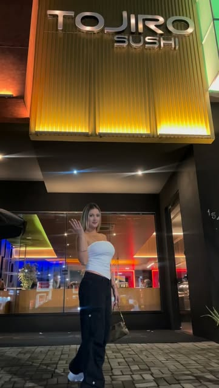

Rodízio premium na Mooca
Rodízio japonês premium, prato a prato.
Uma viagem pela culinária japonesa, feita com técnica: sashimis, sushis, entradas quentes e o menu Origem, com reserva pelo WhatsApp.
Rodízio premiumMenu OrigemReservas pelo WhatsApp

Fotos: @tojirosushimooca
Na casa
Rodízio premium
Pratos servidos à mesa, com cuidado em cada detalhe.
Menu Origem
A linha de pratos autorais da casa.
Aniversários
Comemore na casa: reserve pelo WhatsApp.
Reservas
Direto pelo WhatsApp (11) 98268-8149.
Quando abrimos
Os horários ficam no destaque "Horários" do Instagram. Para reservar, chame no WhatsApp.